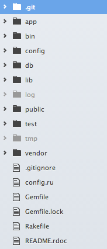
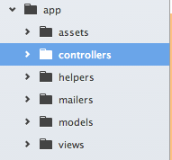
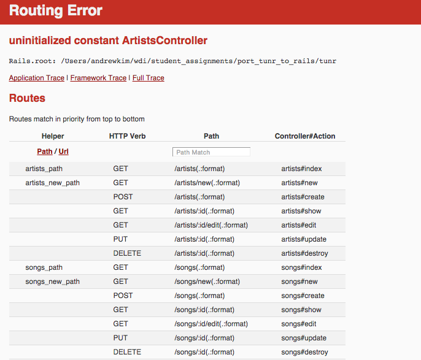
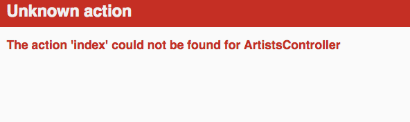
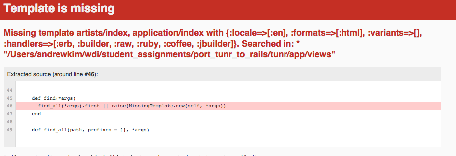
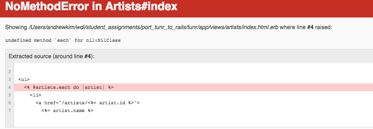

- An Introduction
- 1. Front End Fundamentals
- 2. Intermediate Front End
- 3. Project 1
- 4. Ruby + MVC with Sinatra
- 5. MVC with Rails
- 6. Project 2
- 7. APIs with Rails and Express
- 8. Users and Authentication in APIs
- 9. Project 3
- 10. MV* with Backbone
- 11. MV* with Angular
- 12. Portfolio Project
- Published with GitBook
MVC - Intro to Rails
Learning Objectives
- Explain what Ruby on Rails is and it's architectural components (rMVC)
- Explain the lifecycle of an HTTP request in Ruby on Rails
- Explain how Convention over Configuration relates to Ruby on Rails
- Explain the structure of a rails application (folders & files)
- Compare and contrast the structure Sinatra and Rails appps
- Create a new Ruby on Rails application
- Create a Rails App with a RESTful interface
- Follow Rails naming conventions when creating models, views and controllers
- Use error driven development in Rails to identify common errors and implement solutions for them.
Opening Framing (5/5)
So we've learned about Sinatra, your very first web framework! It's great. It's an awesome tool to get a quick page up and running. So why would we ever want to learn Rails? So Sinatra is kind of like a shovel for web development. Rails is kind of like a nuclear powered back hoe for web development. We need to know how to work a shovel before we get the keys to the back hoe. Many of the same conventions you used in Sinatra will transition into rails, but more importantly, there's alot more. Rails is a heavy duty web framework that follows relatively strict conventions in order to streamline web development.
It is designed to make programming web applications easier by making assumptions about what every developer needs to get started. It makes the assumption that there is the "best" way to do things, and it's designed to encourage that way - and in some cases to discourage alternatives. - Ruby on Rails guide
Rails is a framework with lots of rules/conventions. Pay attention to the conventions you'll need to follow for rails throughout the week.

rMVC (10/15)
The design pattern that rails is built around is rMVC - router, model, view and controller.
Life Cycle of the request/response in Rails:
A user of our web application submits a request to our application's server. It can come in a myriad of ways. Maybe someone typing in a URL and hitting enter or maybe a user submitting a form on our application.
The request hits the router of the application.
The application than either doesn't recognize the route (error) or it does recognize it and sends it to a controller.
Once the request hits the controller, its then going to query the database through Active Record(the model) for the information specified in the controller.
Once the controller has the information from the model that it needs it sends it to the view
The view takes the objects from the controller and sends a response to the user.
Let's take a look at some rails code.
Rails folder/file structure (15/30)
The first thing that I want to do, is just create a new rails applications. But I think first what we should do is ensure we have rails. $ gem install rails. Next I want to actually create my rails application:
$ rails new tunr -d postgresql
You can see already there are many folders and files generated from just that one command.

It can be quite daunting at first. It'll take some getting used to, but more importantly, you're already familiar with alot of the stuff in rails we'll be using. Additionally, you can ignore alot of the other stuff until you need to incorporate some weird gem/dependency. So we started learning about "convention over configuration" during the class for Active Record. As we scale to a rails size application, We can quickly see the need for conventions in such a massive framework.
The first folder we'll talk about is the app folder:

This folder is the the most important folder in your entire application. It'll have pretty much most of the programs functionality resting in it.
assets- This will be where all of your CSS, JS, and image files belong.controllers- This folder will contain all controllers.(ST - WG) What do controllers do for us?helpers- This is where you can define any helper methods for your applicationmailers- Won't be covering mailers in the scope of this class. Mailers are utilized to send and receive email within a rails application. But it's pretty simple, if you want to learn more about it. You can look heremodels- this folder will contain our AR models.views- This folder contains all of the views in this application.
These folders are easily the most important part of your application. Not to say the other parts aren't.
The bin folder contains binstubs. Not going over this in the scope of this class, but basically they're used as wrappers around ruby gem executables(like pry) to be used in lieu of bundle exec
The config is another folder that's pretty important. The file you'll most be visiting is routes.rb This is the router in rMVC.
The db folder is one you'll be working in for a bit of time as well. This contains the seed file but additionally it will also contain your migrations which you'll be going over in the next class.
In the main directory there are a couple of files your familiar with, the Gemfile and Gemfile.lock
Tunr Port to Rails
The sinatra app we'll be working with is located here
Please make sure you create the database, upload the schema and seed your database.
Configuring models and DB (10/40)
If you want to work from the same Sinatra app that I will be working with, it can found here
The first thing that I want to do is connect our rails app to the tunr db that we made in our Sinatra version. We want to go into the config/database.yml file:
development:
<The next thing that I want to do is port my model definitions. All you need to do is create the exact same model files in the sinatra_tunr for the app/models folder in the rails app. Create two files app/models/artist.rb and app/models/song.rb and fill the contents.
app/models/artist.rb:
class Artist < ActiveRecord::Base
has_many :songs, dependent: :destroy
end
app/models/song.rb:
class Song < ActiveRecord::Base
belongs_to :artist
end
Let's run rails console and play with our models to test for a good connection to the database(5m to make sure everyone has a connection to the database):
Routes(the non rails way)(15/55)
Great, now that we've established a connection to our database let move on to building out our routes.
Basically what were doing here is mapping out what the different routes of our application will be just like our controllers in sinatra did for us. Let's pull from the artists controller first. Here's an example before/after for the first one:
# in sinatra
get "/artists" do
@artists = Artist.all
erb(:"artists/index")
end
post "/artists" do
@artist = artist.create!(params[:artist])
redirect("/artists/#{@artist.id}")
end
# Becomes this in routes.rb:
get "artists" => "artists#index"
post "artists" => "artists#create"
the actions for put/delete requests are update/destroy
BREAK + You do - create the rest of the routes including all the song routes (20/75)
For the next part of the class
Error Driven Development (30/105)
I'm going to be using error driven development to show some common errors and their solutions.
Alright, I want to go ahead and test one of these routes out. In the terminal start up your rails server $ rails s And open a new terminal tab cmd + "t" and type rake routes. This shows you every route that is defined in config/routes.rb
Lets go into our browser and go to http://localhost:3000/artists and we'll see:

So the application receives the request and says, /artists I know what to do here. I need to send this to the artists controller.
Then finally we hit this error above. unintialized constant ArtistsController that means we have to create that controller. So let's go ahead and do that. $ touch app/controllers/artists_controller.rb
In app/controllers/artists_controller.rb:
class ArtistsController < ApplicationController
end
Let's refresh:

Oh noes another error. When we go to http://localhost:3000/artists our router says it knows where to send it. It's sending it to the artists controller and expects it to do the index action. Unfortunately we haven't defined it yet, so it's unknown. Lets go ahead and define one now
In app/controllers/artists_controller.rb:
class ArtistsController < ApplicationController
def index
end
end
Great let's reload: 
Another one .... We'll get more into this later. But this one is yelling at us for not having a view ready yet. Specifically in this case, the index view. So let's create that. Let's first make a directory and file in the terminal:
$ mkdir app/views/artists
$ touch app/views/artists/index.html.erb
Inside app/views/artist/index.html.erb:
Just put <h1>Hello World</h1>
And finally:
Hooray! That's really awesome. But not all that useful. Really what we want is all of the artists. If only we had some existing code and we can just copy stuff, we do! Lets take a look at our artist index view in our sinatra app.
<h2>Artists <a href="/artists/new">(+)</a></h2>
<ul>
<% @artists.each do |artist| %>
<li>
<a href="/artists/<%= artist.id %>">
<%= artist.name %>
</a>
</li>
<% end %>
</ul>
Yep, looks good, lets shove all this stuff into the app/views/artist/index.html.erb.
Let's refresh the page:

When we look at this error it says undefined method 'each' for nil:NilClass
That's because @artists isn't defined. Let's define that now in the index action of our artists controller. In app/controllers/artists_controller.rb:
class ArtistsController < ApplicationController
def index
@artists = Artist.all
end
end
You do - THE REST OF IT. (45/145)
We've already done all of the code in Sinatra. All you're doing is changing the code from a sinatra app to a rails app.
Port Controller File
- copy the contents of the Sinatra Controllers and convert each block into a method/action on the rails app. Make sure the method/action names match what you have defined in the router.
- convert all
redirect()statements toredirect_to(). Replace allerb()statements withrender()statements.(or omit them if the name of the file matches the controller and action name)
Copy Views
Copy over the views/artists folder into app/views in our Rails app. We used
the Rails convention in Sinatra, so the only thing we have to do is rename
each file from something like new.erb to new.html.erb.
Also, copy over the layout.erb file into
app/views/layouts/application.html.erb. Make sure to keep the Rails' generated
content in the <head> though.
Fix Authenticty Token Issues
Rails protects us from an attack called a Cross-Site Forgery Request or 'CSRF'. It does this by embedding a unique key into each form it generates for us, and rejecting non-GET requests without the key.
To allow us to use non-Rails forms (until tomorrow), we need to comment out the
following line in application_controller.rb:
protect_from_forgery with: :exception
and inside config/application.rb
config.action_controller.permit_all_parameters = true
Run rails server
Run rails server and test out your site. It's not all too much different from Sinatra. Except it splits the conerns of routing from controllers, and makes assumptions about what your files are called.
Closing(5/150)
Review LO's Homework will be to port WDInstagram to a rails app. here